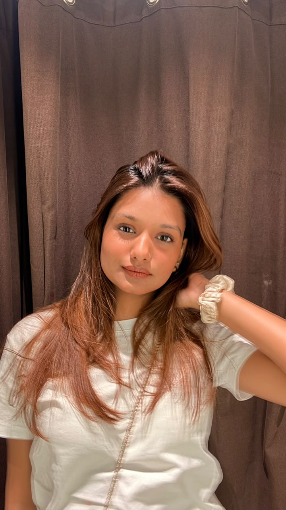

Our Story
Uptall was born from a frustration every tall girl knows too well—pants that are too short, awkward proportions, and the endless search for something that actually fits.
Uptall creates thoughtfully designed bottomwear made for taller frames, because being tall should never mean compromising on style.
After years of settling, folding hems, and hearing "just get it altered," we decided it was time for a change.
Our Mission
To create stylish, well-fitting bottomwear that celebrates tall women and gives them the confidence to stand tall—without compromise.
Meet the Founder
Hi, I'm Ritika, a tall girl who has spent way too many shopping trips asking:
"Are these supposed to be ankle-length... or are my legs just doing the most?"
I grew up convincing myself that "close enough" was good enough, and secretly celebrating whenever I found a pair of pants that didn't stop halfway up my calves. Eventually, I realised I wasn't the only one.
Uptall started from my own experience and countless conversations with other tall women who were tired of choosing between the right waist fit and the right length. So I decided to build the brand we had all been looking for.
From one tall girl to another: I get it. And that's exactly why Uptall exists.

Ritika
Founder, Uptall